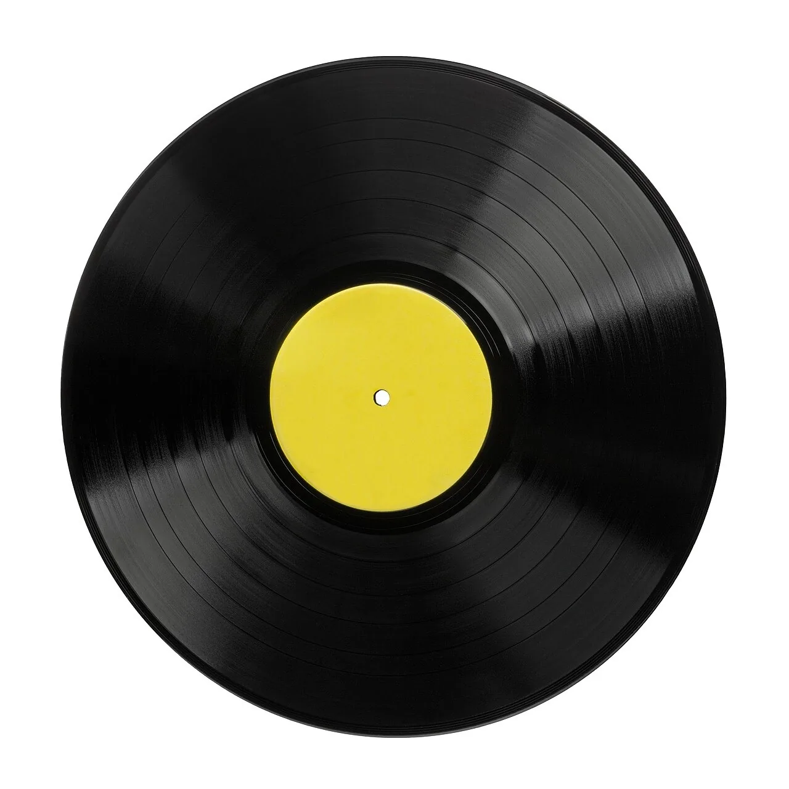
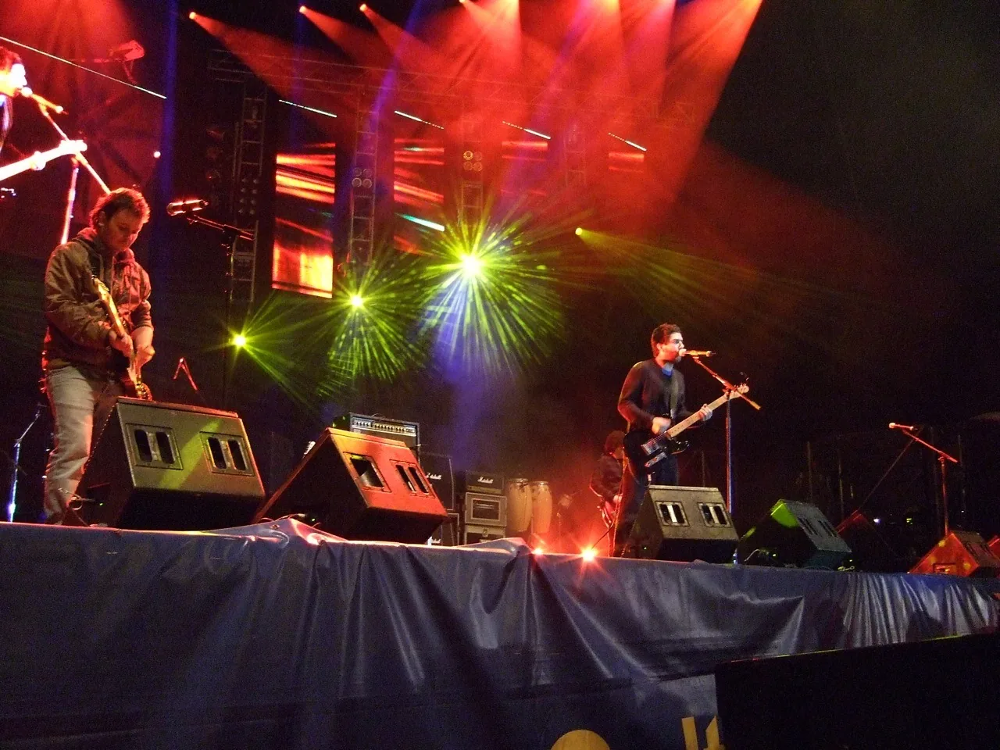

Una lista sigue sonando después de la canción que elegimos. El siguiente tema puede pasar inadvertido o hacer que busquemos un nombre, un disco, una escena. La misma interfaz permite esas dos experiencias. La discusión sobre escuchar hoy comienza en esa pequeña decisión: qué atención damos a una música que ya no necesita que la volvamos a pedir.
El recorrido cambia según el soporte. Un fragmento puede llegar en un video, continuar en una plataforma y conducir después a un concierto. El álbum conserva su lugar sin ser la única unidad de escucha. Seguir una canción entre esos usos permite preguntar qué información viaja con ella: el nombre de quien interpreta, los créditos de composición o apenas un sonido reconocible. La disponibilidad amplía el acceso; la relación con una obra necesita otros apoyos.
IFPI informa que los ingresos mundiales de música grabada llegaron a 31.700 millones de dólares en 2025 y que el streaming representó el 69,6 %. Son cifras del mercado de grabaciones, no de toda la actividad musical ni de los ingresos individuales de quienes crean. La escala económica permite plantear el problema cultural: qué relaciones de escucha organiza esa infraestructura. [1]
En una plataforma, la canción funciona también como una unidad de circulación y remuneración. Entre quien la produce y quien la escucha intervienen distribución digital, recomendaciones y condiciones comerciales. La reproducción permite acceder a la obra, pero también genera datos y participa en un sistema económico. Comprender la escucha exige atender a esas mediaciones.
La posibilidad de encontrar repertorios distantes es una de las ventajas de esa disponibilidad. Una búsqueda puede conducir de una grabación andina a una producción electrónica de otra ciudad, y de allí al trabajo de un músico desconocido. Para que el encuentro continúe importan los créditos, las referencias y las vías de acceso a otras obras. Tener una canción disponible y saber cómo seguirla son problemas distintos de la interfaz.


En una entrevista publicada por Ohio University en febrero de 2026, Josh Antonuccio explica el papel de los sistemas de recomendación en la personalización y el descubrimiento. Ese análisis ofrece una cautela para la crítica: la comodidad puede ayudar a encontrar música y también estrechar el recorrido. No demuestra que toda recomendación encierre al oyente en un gusto fijo. [2]
La radio y las tiendas de discos también seleccionaban mediante criterios e intereses propios. En la plataforma, esa mediación puede acompañar de forma continua la escucha y adaptarse a hábitos individuales. La pregunta es qué puede reconocer y modificar el oyente: por qué llegó una canción, cómo cambiar el recorrido y dónde encontrar información que la selección automática no ofrece.
Una selección comentada ofrece un recorrido que se puede discutir. Un programa de radio, un DJ o una publicación pueden explicar por qué acercan dos grabaciones, qué diferencia proponen escuchar o qué historia conecta a sus autores. Ese contexto vuelve visible una decisión. Su valor depende de lo que ayuda a descubrir, tanto si llega por una persona como si una interfaz permite encontrarlo.
El informe BRIDGE sobre América Latina se basa en investigación en Argentina, Brasil, Chile, Colombia, México y Paraguay. Identifica barreras de inversión y distribución para compañías independientes. La circulación internacional de grabaciones puede coexistir con dificultades para sostener estructuras de trabajo; el crecimiento del mercado no permite deducir por sí solo la situación de cada artista. [3]
La visibilidad de una escena plantea preguntas que las cifras de reproducciones no responden: quién puede financiar una grabación, distribuirla y sostener trabajo después de publicarla. Una canción que cruza fronteras no describe por sí sola las condiciones del lugar donde se hizo. Para leer esa circulación desde América Latina hace falta relacionar el éxito visible con las estructuras de producción que lo permiten.
La generación de voces, acompañamientos o canciones a partir de instrucciones añade otra mediación. El resultado puede circular junto a grabaciones interpretadas por personas, con procesos de producción muy distintos. Para evaluar esa convivencia habría que poder identificar la intervención del sistema, la procedencia de los materiales utilizados y la responsabilidad de quien publica.


La discusión sobre autoría requiere examinar el proceso concreto: qué decidió una persona, qué produjo el sistema y qué materiales intervinieron. También exige preguntar cómo se reconoce a los músicos cuyas grabaciones se utilizaron y qué información recibe el público. La semejanza sonora entre dos resultados no permite reconstruir por sí sola esas condiciones.
Deezer comunicó el 20 de abril de 2026 que recibía casi 75.000 pistas enteramente generadas con IA al día, alrededor del 44 % de sus nuevas entregas. Ese porcentaje describe archivos que llegan al servicio, no la proporción de toda la música escuchada. Son datos de una empresa y de su sistema de detección, no una medición independiente de todas las plataformas. [4]
Un experimento con timbres y un catálogo fabricado para acumular reproducciones pueden emplear herramientas parecidas y perseguir fines diferentes. El juicio necesita atender al proceso, los acuerdos sobre los materiales y el modo de distribución. Etiquetar una obra como generada con IA inicia la discusión; todavía queda saber qué se hizo y quién responde por ello.
El vinilo ofrece una relación material con la obra: portada, tipografía, secuencia de canciones y caras del disco forman parte de la edición. Escucharlo implica operaciones y pausas distintas de las de una lista continua. Ese soporte permite estudiar cómo el diseño organiza la atención, sin suponer que poseerlo garantice una escucha más cuidadosa.
En un concierto, lugar, interpretación y público comparten una duración. Una variación, una pausa o una improvisación se reciben junto a otras personas. La fotografía de Bajo Tierra que acompaña este texto recuerda esa dimensión de la escucha, que una cifra de reproducciones no describe. Para comprender la vida musical de una escena habría que seguir también los espacios que hacen posible reunirse.
Una canción que llega por una lista puede abrir una búsqueda; un disco comprado puede quedarse sin escuchar. Ningún soporte decide la atención que recibirá. Seguir un crédito, escuchar un álbum completo o buscar el lugar donde toca un músico son maneras de continuar ese primer encuentro. El diseño de la circulación importa cuando deja abiertas esas posibilidades.
Fuentes.
- IFPI — Global Music Report 2026, resultados de 2025
- Ohio University — entrevista con Josh Antonuccio, 03.02.2026
- WIN — BRIDGE Regional Report, Latin America
- Deezer — comunicado del 20.04.2026
Ensayo cultural. Las cifras corresponden a periodos, muestras y plataformas identificados; no se presentan como ingresos de artistas ni como medición universal de la escucha.
Fuentes consultadas el 13.11.2026. Interpretación y edición: RUMMOR. Edición de prueba para revisión.